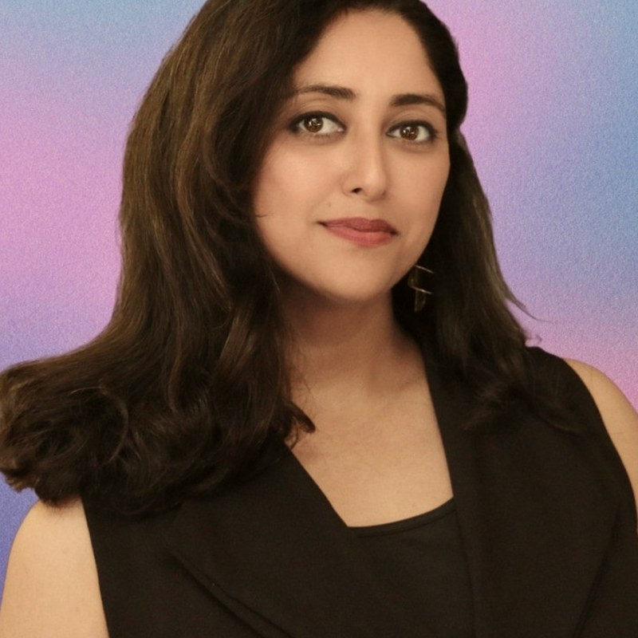

An AI learning companion for self-directed learners
A web platform that pairs AI with learner autonomy, so people can chart their own personal learning paths.
hi there! I'm
I'm a learning scientist and a former classroom teacher. I design learning experiences, curricula and EdTech products that make learners and educators genuinely excited to show up.

I started out studying commerce and journalism, then found my way into a classroom with Teach For India, teaching first-generation learners in Delhi. That's where I fell for this work. Since then I've coached new teachers, designed art-integrated STEM programs, and helped shape the curriculum behind a platform used by more than a million learners.
In 2024 I went back to school, at the brain age of 32!, for a Master's in Learning Sciences at Northwestern. My family still jokes about it. These days I'm most curious about how AI can support people who are steering their own learning, without taking the wheel from them.
When I'm not designing learning, I'm writing about it on Medium, or serving as my family's unofficial AI tutor. Both sets of parents now use ChatGPT. Mostly for birthday wishes.
“Our brains are amazing (blow a kiss to yours!)”from my essay Perspective Multiplier
Northwestern University, School of Education & Social Policy
LEAD Schools, an EdTech unicorn in India
Shiv Nadar Foundation, HCL Technologies
Teach For India
A web platform that pairs AI with learner autonomy, so people can chart their own personal learning paths.
A workshop series at Northwestern introducing AI concepts and everyday uses to educators and learners.
A board game for young engineers, aligned to NGSS 3-5-ETS1-3, that teaches energy through design trade-offs.
Mentored young people as they researched their own communities and built tech and non-tech solutions.
Field research with Teach For India on socio-economic patterns in Delhi's urban villages, to inform how we teach.
Why going back to study in your thirties might be perfect timing for your brain.
read →The six small steps that got my parents and in-laws using AI.
read →The science of why many viewpoints make for better thinking.
read →A student, the “10% of your brain” myth, and an article retitled “You Can Be Smarter Than Albert Einstein.”
read →what I do
what I use
what I speak
certificates
I'm always happy to talk learning design, EdTech, AI in education, or the myths we still believe about our brains.
tretasharma@gmail.comBased in Mountain View, California · Authorized to work in the US, no sponsorship needed.